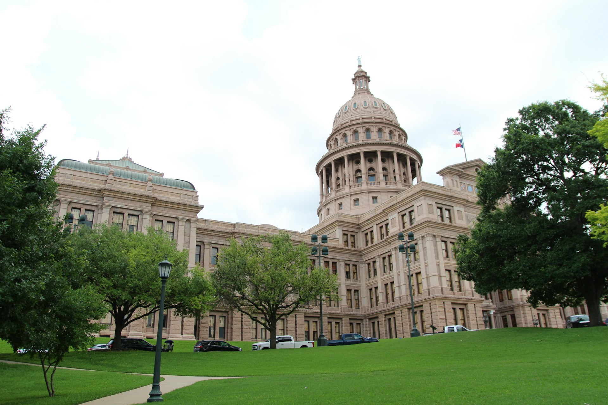

Austin
Population: 964,177 (2021)

Photo of Capital Building in Austin, TX
Three interesting facts...
- Incorporated: December 27, 1839
- Region: Central Texas
- Classification: Urban
Fun things to do!
- Hear Live Music At 6th Street
- Hike At McKinney Falls State Park
- Swim In Barton Springs Pool
Income compared to Texas
| Measurable | City | State |
|---|---|---|
| Median household income | $86,530 | $66,963 |
| Median family income | $109,059 | $80,304 |
| Per capita income | $47,161 | $34,717 |